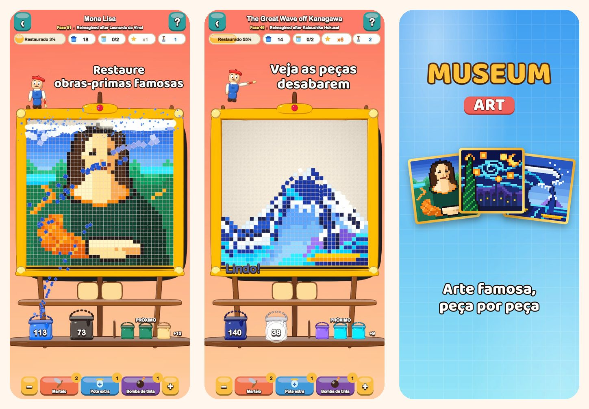

Museum Art
Quebra-cabeça em pixel art
Toque em uma cor e veja as peças desabarem. Restaure 51 imagens em pixel art, da Mona Lisa a Istambul, Paris, Roma e Nova York.
Baixar na App Store
Sobre o jogo
Cada imagem de Museum Art é feita de peças quadradas e coloridas. Tire uma cor de cada vez e veja a imagem brilhar de novo.
COMO JOGAR
- Toque em uma área de cor que encosta na fileira de baixo, ou em um balde na prateleira: as peças voam para o balde delas.
- As peças de cima escorregam como areia e abrem novas jogadas.
- Ainda não tem balde para uma cor? Guarde-a em um pote na bandeja.
- Quanto menos usar a bandeja, mais estrelas você ganha.
51 IMAGENS PARA RESTAURAR
- Cenas alegres e fáceis para começar: um balão de ar quente, um veleiro, um gato e um farol.
- Natureza: picos nevados, um lago na montanha, cerejeiras em flor e um deserto ao entardecer.
- Uma volta ao mundo por Istambul, Paris, Roma e Nova York.
- O Cofre dos Mestres: A Grande Onda, A Noite Estrelada, Ninfeias, A Leiteira, Impressão, Nascer do Sol e a Mona Lisa, recriadas em pixel art.
TRANQUILO E JUSTO
- Toda fase pode ser resolvida sem itens de ajuda, e tentar de novo é grátis.
- Itens de ajuda para os momentos difíceis: Martelo, Pote Extra e Bomba de Tinta.
- Dê zoom nos detalhes quando quiser.
- Uma curiosidade sobre cada imagem.
- Jogue em 19 idiomas.